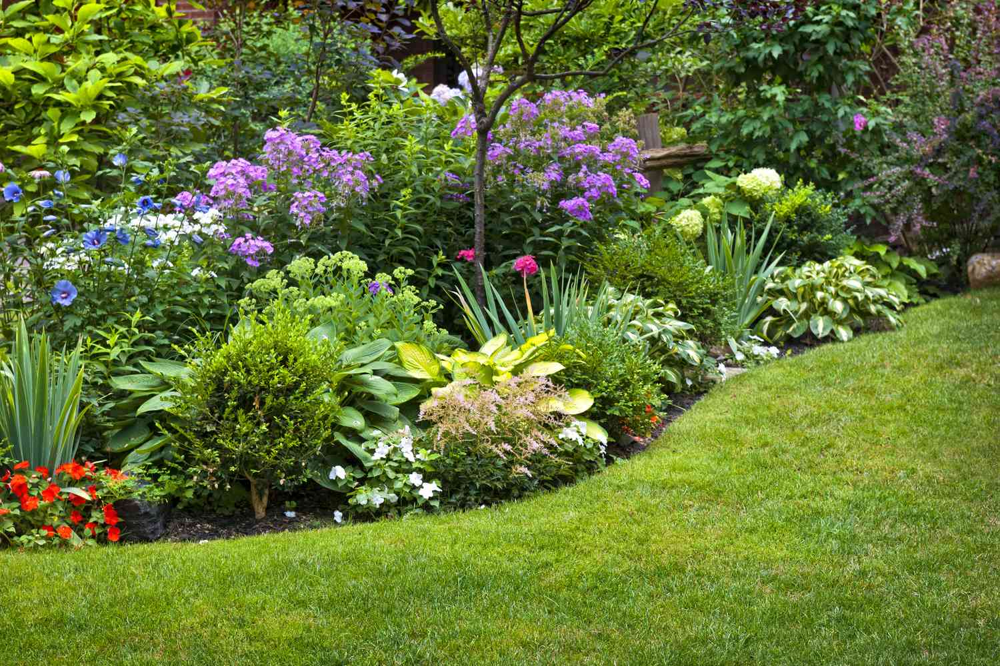

Your doorstep. Our canvas.
Thorough garden clean-up, installation of all bricks,
sticks and stones that create expectation and flow, focus, and planting of all that green and grow.
Being on-site twice per day throughout the implementation phase,
implies that all planting and installation happen according to plan.
Once our co-created vision of a landscaped garden has been realised, we invite you to make use of Brownstone Landscapes
We are the best gardening service in Bloemfontein.
Latest projects
